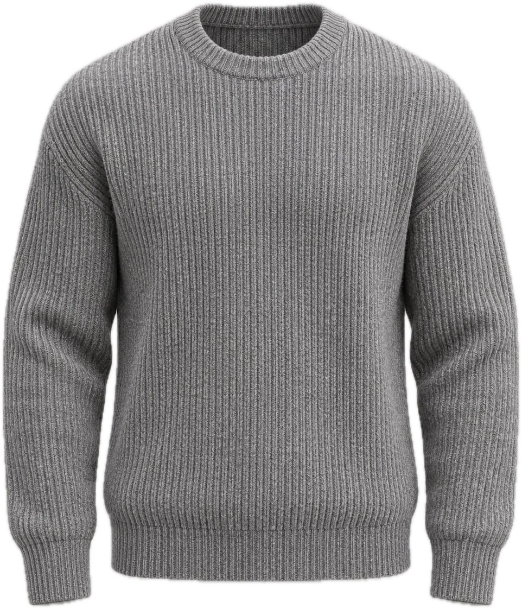

Yardım
Sor,cevaplayalım.
Sipariş, kargo, iade ve beden. Burada bulamadığını bize yaz; hafta içi aynı gün dönüyoruz.
1–3 iş günü
Kargo veteslimat
Kargo takip numarası, siparişin yola çıktığında e-posta ve SMS ile gelir.
14 gün
İade vedeğişim
Teslim aldığın günden itibaren 14 gün içinde, sipariş e-postandaki bağlantıdan iade kodunu al.
Ürünü etiketi koparılmadan, orijinal paketinde hazırla.
Anlaşmalı kargo şubesine iade koduyla ücretsiz bırak.
Ürün bize ulaştıktan sonra 3 iş günü içinde ödemen kartına iade edilir.
Beden değişimi ücretsiz: iade kodunu alırken “değişim” seç, yeni bedeni biz gönderelim.
S — XL
Bedenrehberi
Ölçüler santimetredir ve ürünün düz serilmiş hâlini gösterir. Kalıplarımız rahat; arada kaldıysan küçük bedeni seç.
| Beden | Göğüs | Boy | Bel (pantolon) |
|---|---|---|---|
| S | 58 | 68 | 76 |
| M | 61 | 70 | 80 |
| L | 64 | 72 | 84 |
| XL | 67 | 74 | 88 |

Göğüs ölçüsü koltuk altından koltuk altına, boy ölçüsü yakanın en üst noktasından etek ucuna alınır.
6 soru
Sıksorulanlar
Kapıda ödeme var mı?
Hayır. Siparişler kredi ya da banka kartıyla, ödeme sağlayıcının güvenli sayfasında ödenir. Peşin fiyatına 3 taksit bütün kartlarda geçerli.
Tükenen bir beden tekrar gelecek mi?
Drop 02 sınırlı sayıda üretildi. Ürün sayfasında tükenen bedenler için yeniden üretim planlanırsa bültende duyururuz.
Ürünler nerede üretiliyor?
Örgüler Denizli’de örülüyor; paltolar ve pantolonlar İstanbul’daki atölyelerde kesilip dikiliyor.
Yün ürünleri nasıl yıkamalıyım?
30°C’de yün programında, ters çevirerek yıka ve sererek kurut. Paltolar için kuru temizleme öneriyoruz. Her ürünün bakım etiketine bak.
Yurt dışına gönderim yapıyor musunuz?
Şimdilik yalnızca Türkiye içine gönderim yapıyoruz.
Hediye paketi ekleyebilir miyim?
Evet, sipariş notuna yazman yeterli. Paketin içine fiyatı göstermeyen bir not kartı koyarız.
Hafta içi 10–19
İletişim
Hafta içi 10:00–19:00, cumartesi 11:00–17:00